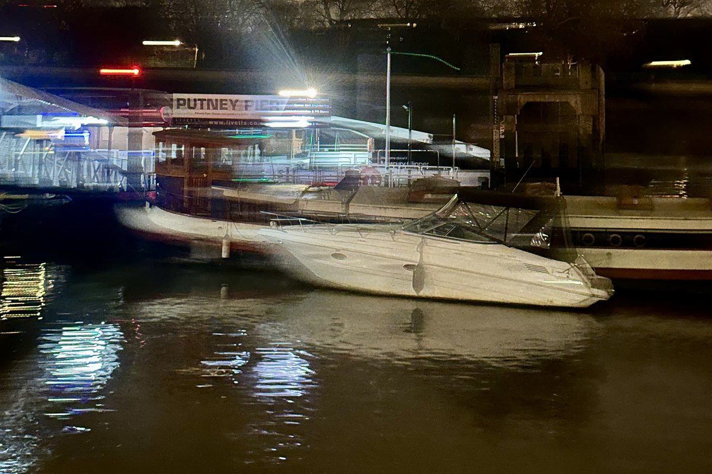

Putney for River Air and a Proper Music Pub
A Thames walk, a proper pub pause and an unfussy Italian dinner before a real music room — if the listing earns it.
Personally field-checked route — live details can still change.
Last checked: Personally field-checked — July 2026. Verify opening hours and access before going.

Start at Putney Bridge, allow three to five hours, it is a gentle walk, reckon on under £30 without a gig, and there are toilets at the station and the pub.
Last walked.
unverified — details not yet reconfirmed
A Friday in early July, warm enough to regret the jumper. The Embankment had two crews launching at once and a coach on a bicycle shouting at both. The Half Moon listing was a covers band; we stayed for the front bar instead, which was the right call. Al Forno seated us without a booking at 7 — do not count on this on gig nights.
No community walks reported yet.
Walked it? A concise field note helps keep the route current. Community reports never change the Field-checked label automatically.
Start without guessing.
Suggested arrival
Putney Bridge Underground — Use the main exit and set the first pin before leaving the station entrance.
Set your first pin
Putney Bridge — south side
Once you arrive
Walk west from the station to Putney Bridge, cross the Thames towards Putney, then descend to the south-bank riverside at Putney Embankment.
Start in Google Maps (opens in a new tab)Open the whole walk (opens in a new tab)
Use the live walking route for crossings and temporary closures; the written direction is an orientation cue, not turn-by-turn navigation.
We never request your location. Google Maps can use it privately, if you have already given Maps permission.
Thames air, an old pub, a no-fuss dinner and the useful possibility that the evening becomes a gig.
Start with the river so the evening has room to arrive. Take one proper pause in a pub, eat somewhere warm and straightforward, then decide whether the night should remain a conversation or become an event. The no-gig version is still the route, not a consolation prize.
Best for.
- A second or third date
- Music-loving friends
- A southwest escape without Chelsea gloss
Not ideal for.
- A 45-minute first date
- Guaranteed seating
- Conversation once the band starts
The route.
Putney Bridge — south side
Meet on the Putney side of the bridge, above Putney Embankment.
From the previous point: From Putney Bridge station, walk to the bridge, cross towards Putney and use the south-bank access for Putney Embankment.
Make this the unambiguous meeting point. The bridge gives you river air immediately and avoids deciding where to go while standing outside the station.
Walk here from the station (opens in a new tab)Open this point (opens in a new tab)
Putney Embankment and the rowing clubs
Putney Embankment, London SW15
From the previous point: Turn west along Putney Embankment and keep the Thames on your right. Extend the walk past the rowing clubs only while the weather and conversation make it worthwhile.
Past the boathouses, this is the river-and-varnish stretch. Keep it to twenty or thirty unhurried minutes and turn back whenever the conversation, not the path, says so.
Walk from the previous stop (opens in a new tab)Open this point (opens in a new tab)
The Duke’s Head
8 Lower Richmond Road, Putney, London SW15 1JN
From the previous point: Leave the Embankment near Putney Bridge and walk back towards Lower Richmond Road; the pub is the river-view pause before the optional music branch.
Use the front bar and big windows for the proper river pause. If it is full, try The Bricklayer’s Arms on Waterman Street instead; check current opening hours before relying on either.
Walk from the previous stop (opens in a new tab)Open this point (opens in a new tab)
Al Forno
90 Putney High Street, London SW15 1SR
From the previous point: From The Duke’s Head, walk inland to Putney High Street and continue to number 90. Use the live route for the crossing rather than cutting through private riverside access.
A warm, plain-dealing neighbourhood Italian that does not compete with the gig after it. This stop has been personally field-checked; confirm hours and booking expectations on gig nights.
Walk from the previous stop (opens in a new tab)Open this point (opens in a new tab)
The Half Moon Putney
93 Lower Richmond Road, Putney, London SW15 1EU
From the previous point: Walk back from Al Forno to Lower Richmond Road, then continue to number 93.
Personally field-checked as a proper pub at the front with a real music room at the back. The listing still decides the night: check bands and tickets before setting off.
Walk from the previous stop (opens in a new tab)Open this point (opens in a new tab)Official information (opens in a new tab)
Finish and easy exit.
The Half Moon Putney, 93 Lower Richmond Road
Nearest practical station: Putney Bridge Underground or Putney rail
Both stations are about a 13–14 minute walk from the pub; choose the one that gives you the simpler journey home.
New Moon nights can be a cheaper way in
Some New Moon listings at The Half Moon are priced from £2.50. It is an event series, not a regular happy hour: the date, time and ticket price can change.
Choose the shape of the day.
River + pub + dinner
The default: a reversible, low-pressure evening with a proper meal before the easy exit.
River + pub + dinner + gig
Use the same shape, then go only if the listing and tickets work.
Notes before you go.
Best time
Dry evening, spring to early autumn
Date notes
Good for a second or third date: walking removes some face-to-face pressure, and either person can leave after the first drink without turning it into a statement.
Friends
Best for two to four people. For larger groups, verify seating before making the pub stop the plan.
Solo
The no-gig version works alone if you enjoy river walking and sitting somewhere with a book. The gig is a bonus, not a requirement.
Food and drink
Al Forno is the no-fuss dinner anchor between the pub pause and the gig. Check current kitchen hours and booking expectations before relying on it.
When the plan changes.
If it rains
Reduce the walk to one brief river section, move to The Duke’s Head or Al Forno early, and keep the gig branch only if weather, transport and tickets still make sense.
If it goes well
Extend the river walk or take a second verified pub stop. Do not add a third venue just because the route has space.
If you want to leave early
Leave after the first drink or use Putney station as a practical exit.
What not to expect.
More atmospheric than glamorous; the live-music version depends on the current listing.
Practical warnings
- Check Al Forno’s opening hours and whether a booking helps on gig nights.
- Check the Half Moon’s current listing and tickets before setting off.
- The river can feel colder and windier than the rest of Putney.
- Do not assume a ticket, seat or quiet corner is available.
River first, pub later, dinner in the middle, gig if it goes well.
Two things help most.
What was closed, and where you bailed — more useful than a compliment. Give feedback on this route.
Walked by a person. Wrong by the time you read it, in small ways. Tell us which.
Three words for effort, used the same way every time: flat, gentle, a proper walk. They are defined in Terms used here.